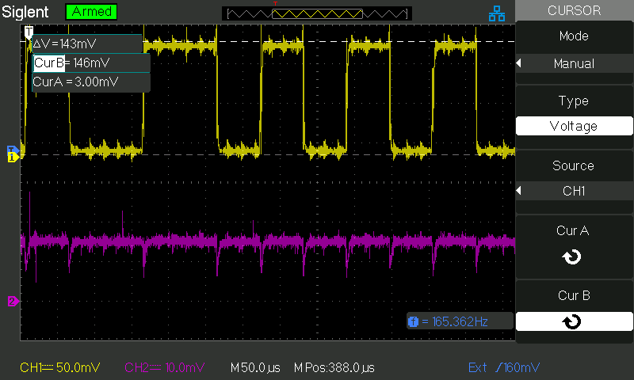

<h2>Current and voltge sense</H2>
<h4>Scope picture of current and voltage sense</h4>

Voltage divider:
<pre>
MainOutputA1--100kOhm--+--11kOhm--GND
                       |
                      A2
</pre>
Channel 1 on A2<br>
Channel 2 on A0 (current sense pin of motor shield)<br>



